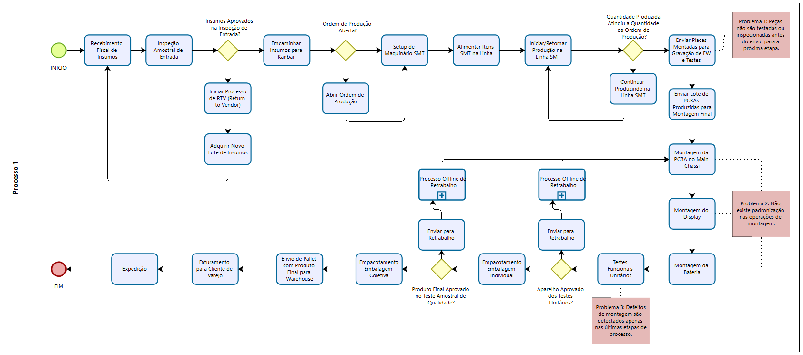
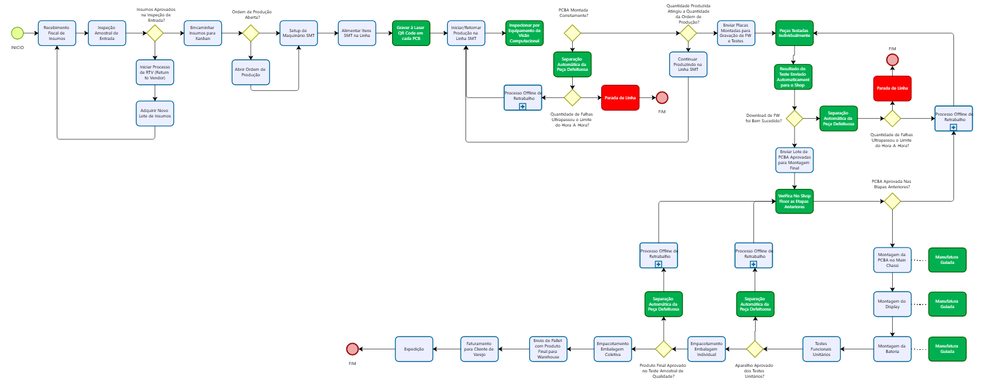

Indicadores: situação atual e meta em 90 dias
Três problemas interligados
Fluxograma do processo atual, com os três pontos-problema

Os oito desperdícios (TIM WOODS)
Análise de causa: Ishikawa (6M) e 5 Porquês clique numa espinha para ver os porquês
Priorização: Pareto de falhas
Ferramentas Lean escolhidas
Plano de ação
Processo futuro proposto
